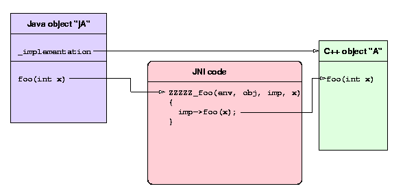
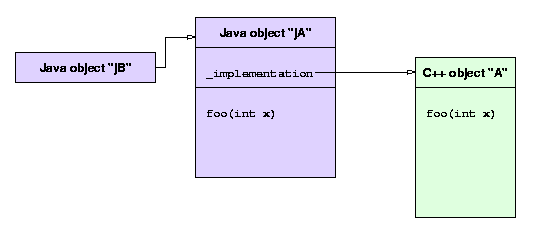

Introduction: what is cxxwrap?
JNI code generationGeneral line of attack
Argument conversion
Finalization and destuction
Extending classes in java
Adding on to an already wrapped API
MyObject jA = new MyObject(); // invokes C++ constructor
jA.foo(37);
MyObject jB = jA; // does not invoke C++ constructor
MyObject jA = someObject.getContainedA();
MyObject jB = anotherObject.getContainedA();
jA.foo(new int[3] {1, 2, 3});
One important point to make is that during the course of the method invocation, a temporary copy of the entire array may be made, which is then destroyed prior to the method return. So, data pointers cannot be transported across the Java/C++ boundary. This is a severe and fundamental limitation with the JNI interface (*). Applications must be sure not to rely on the contents of array arguments after invocation of one of the cxxwrap JNI methods.
cxxwrap can use this method to convert all arrays of primitives, as
well as the java.lang.String primitive type, which becomes a C++
"char*".
The complete list of type mappings from C++ to Java implemented by
cxxwrap
is as follows:
| C++ type | Java type |
| void | void |
| int | int |
| short int | short |
| long int | long |
| float | float |
| double | double |
| bool | boolean |
| char
unsigned char |
byte |
| [const] char* | java.lang.String
(converted using UTF) |
| [const] unsigned char* | byte[] |
| [const] int* | int[] |
| [const] short int* | short[] |
| [const] long int* | long[] |
| [const] float* | float[] |
| [const] double* | double[] |
| [const] bool* | boolean[] |
| C | C |
| [const] C* | C |
| [const] C& | C |
cxxwrap provides an explicit method on all Java objects called delete(), which invokes the C++ destructor. Applications should use delete() just as they would in C++, following the analogy that all Java objects are pointers. If a wrapped Java object fails to call delete(), a memory leak can occur on the C++ heap.
jA.delete(); // invokes C++ destructor
public class A {and you then derive a new class in java:
public A();
public void foo();
}
public class B extends A {You can then create an object of class B and pass it, as an A, to some C++ wrapped API. But when C++ invokes the foo() method on your object, only A's foo() gets called -- never B's foo() -- because the C++ virtual table cannot contain a pointer to the java version of foo() in class B.
public void foo() { System.out.println("B foo!"); }
}
cxxwrap allows you to extend abstract classes in java, for any pure virtual method. If you define A as follows in C++:
class A {then cxxwrap will generate constructors for class A in java, which yield java objects whose pure virtual methods can be extended. Now, when you write class B as shown above, the java version of foo() will be invoked whenever C++ invokes foo(). This is accomplished by generating a hidden adapter class in C++ for every abstract class. It is the hidden adapter whch gets constructed by class A's constructors, not a C++ class A directly.
public:
A();
A(int bar);
virtual void foo() = 0;
};
If your native code creates native threads (e.g pthreads) which are compatible with the JVM you run in, these threads can invoke Java virtual methods via a cxxwrap API. When a Java method is invoked in cxxwrap-generated C++ code, the JNI thread attach API is used to ensure that the calling thread is known to the JVM.
cxxwrap --jni --jni-packages=local vendor/*.h local/*.hThe "--jni-packages" argument tells cxxwrap to emit JNI interfaces only for your files. cxxwrap still needs to scan the vendor files, to build up its internal database of objects in the vendor package(s).
A more compact and reliable way to accomplish this is to use the "--write-cache" and "--read-cache" options of cxxwrap. The following example is taken from the regression test for cxxwrap:
First, the base library is wrapped:
cxxwrap --verbose --package-prefix=org.part1 --jni \Here, the classes found in "examples/part1.h" will be assigned to the package "org.part1.examples", and all classes and template definotions will be saved in "examples/part1.cache" for later use. Next, the add-on library which depends on classes in "examples/part1.h" is wrapped:
--write-cache=examples/part1.cache examples/part1.h
./cxxwrap --verbose --package-prefix=org.part2 --jni \Here, the new classes defined in "examples/part2.h" are assigned to the "org.part2.examples" package, but they can still refer to classes from the first wrapping session. No "--jni-packages" option is needed, because cxxwrap marks classes read from a cache as already wrapped and will not wrap them again.
--read-cache=examples/part1.cache examples/part2.h
This pattern can be extended to an arbitrary number of dependent libraries, by using more than one "--read-cache: option on the later wrapping sessions.